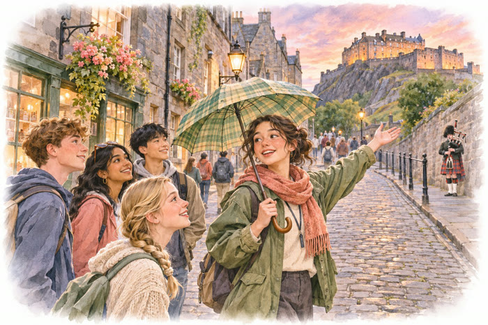

Listen to the text
Speed:

Good morning, everybody, and welcome to Edinburgh! My name is Fiona, and I am your guide for the next two hours. Please stay together, watch the traffic, and remember that in Scotland cars drive on the left. We are starting at the top. Behind me is Edinburgh Castle. It stands on a black rock that was once a volcano. Don't worry, it has been asleep for millions of years. People have lived on this rock since ancient times, because it is easy to defend. Inside the castle you can see the crown jewels of Scotland: a crown, a sword and a sceptre. For more than a hundred years they were lost. They were found in 1818 in a locked room, inside an old wooden crate, covered with dust. Every day except Sunday a gun is fired from the castle at exactly one o'clock. Long ago it helped sailors in the harbour to set their clocks. Why one o'clock and not twelve? People joke that a Scot would never waste twelve shots when one is enough. Now we are walking down the Royal Mile, the main street of the Old Town. Look at the tall, narrow houses on both sides. Many of them are built of local sandstone, which was light when it was new and has turned dark with age and smoke. Between the houses there are tiny passages that are called "closes". Some of them are only as wide as my arms. On your right is St Giles' Cathedral with its tower in the shape of a crown. For centuries it has been the cornerstone of the city's life. Markets were held around it, and important news was read aloud here. At the bottom of the Royal Mile is the Palace of Holyroodhouse, the royal residence in Scotland. Behind it rises a green hill called Arthur's Seat. If you have strong legs and an hour of free time, climb it. From the top you will see the whole city, the bridges and the sea. That is the end of our tour. A last piece of advice: try the local shortbread, take an umbrella even if the sun is shining, and listen for the bagpipes. In Edinburgh there is always a piper somewhere around the corner. Thank you, and enjoy your stay!
Tap any sentence to hear it again.
Сподобалось? На сайті ще більше матеріалів для вчителів!
Reader, презентації, ігри, діагностичні та контрольні роботи до підручників 1-11 класів.
Перейти на сайт materials.allaenglish.com